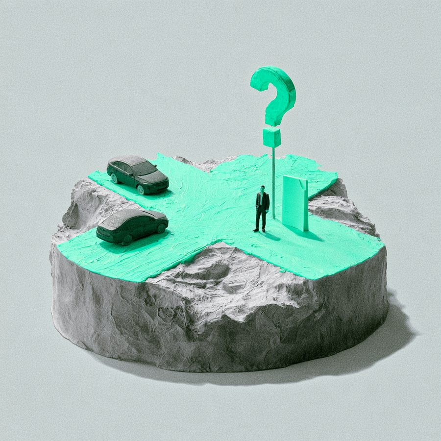

특정범죄가중처벌등에관한법률위반(도주치상)(일명 뺑소니) 무혐의
의뢰인은 업무를 마치고 야간에 영동고속도로에서 90킬로로 정속주행을 하는 도중에 잠시 몽롱해진 상태에서 무언가 쿵 소리를 들었으나, 분기점에서 차량을 빠져나가야 하는 상황이어서 아무 일이 없다고 생각하고 차량을 운행한 후, 집에 도착하였습니다. 수사기관은 경찰서는 본 변호사의 주장을 받아들여 피해자의 상해가 뺑소니에서 인정되는 상해에 해당하는 정도가 아니라고 판단하여 혐의없음 불송치 결정을 하였습니다.

고소・수사
—
무혐의
이 사건의 쟁점
의뢰인은 업무를 마치고 야간에 영동고속도로에서 90킬로로 정속주행을 하는 도중에 잠시 몽롱해진 상태에서 무언가 쿵 소리를 들었으나, 분기점에서 차량을 빠져나가야 하는 상황이어서 아무 일이 없다고 생각하고 차량을 운행한 후, 집에 도착하였습니다. 집에 도착하고 나서 확인해 보니, 차량의 뒷부분이 파손된 것을 확인하고, 그 다음날 차량 사고 접수를 하였습니다. 그런데, 쿵 소리가 날 당시 의뢰인의 차량으로 피해자의 차량이 파손되었고, 피해자는 즉시 신고를 하면서, 상해를 입었다는 취지로 주장하면서 일명 뺑소니로 신고를 하였습니다.
본 변호사의 전략 변호사 김용석
의뢰인은 당시의 상황을 기억하지 못하고 있고, 쿵 소리를 듣고 분기점을 빠져나간 것만 기억하고 있었습니다. 본 변호사가 의뢰인의 피의자신문에 입회하면서, 피해자 차량의 블랙박스를 확인하였는데, 의뢰인의 차량이 피해자가 운행하는 옆 차로로 급하게 들어오고, 피해자의 차량을 추돌한 후, 분기점에서 차량을 우회전하여 나가는 것을 확인하였습니다. 이에, 본 변호사는 블랙박스의 영상을 볼 때, 일반인의 관점에서 뺑소니의 고의가 없었다고 보기 어렵다고 판단하여, 최대한 신속하게 피해자들과 합의를 시도하였고, 그 합의 과정에서 피해자들이 이 사건 사고로 일상생활이나 직장생활에 지장이 발생할 정도의 상해가 없었다는 취지의 진술을 확보하였습니다. 위 진술이 포함된 합의서의 내용을 토대로 피해자의 상해가 소위 특정범죄가중처벌등에관한법률위반(도주치상)(소위 뺑소니)에서 인정되는 '상해'로 볼 수 없다는 내용 및 이러한 취지에 대하여 판시한 대법원 판례를 근거로 주장하였습니다. 소외 뺑소니는 교통사고를 내고 사람을 다치게 한 다음, 이에 대한 구호조치를 하지 않고 도주한 경우 인정됩니다. 이때, 모든 상해가 뺑소니와 관련된 상해가 되는 것은 아닙니다. 일반적으로 교통사고를 당했다고 하면서 병원에 가는 경우 병원에서는 기본적으로 2주의 진단서를 발급하여 주나, 이러한 진단서 만으로 뺑소니의 요건에 해당하는 상해로 볼 수 없습니다. 그렇기 때문에, 당시 사고의 경위 및 내용, 피해자의 진술 등을 토대로 뺑소니에서 인정되는 상해에 해당하지 않는다는 주장을 할 필요가 있고, 이 사건에서와 같이 수사기관 또는 법원에서 인용될 가능성도 높습니다.
결과 및 판단
수사기관은 경찰서는 본 변호사의 주장을 받아들여 피해자의 상해가 뺑소니에서 인정되는 상해에 해당하는 정도가 아니라고 판단하여 혐의없음 불송치 결정을 하였습니다.